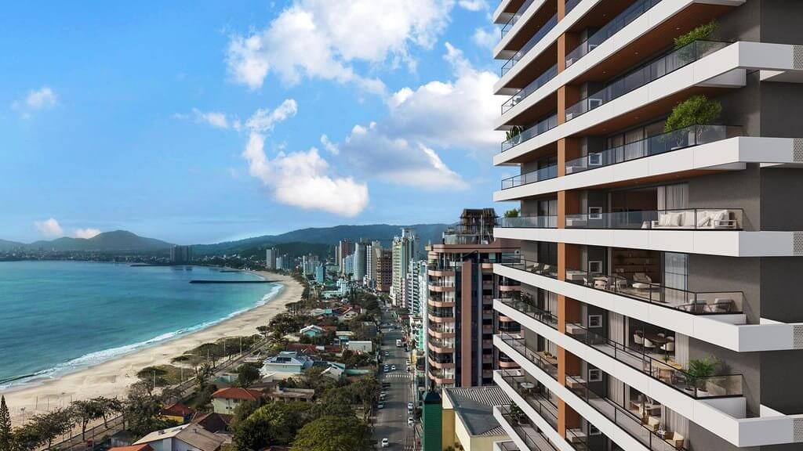
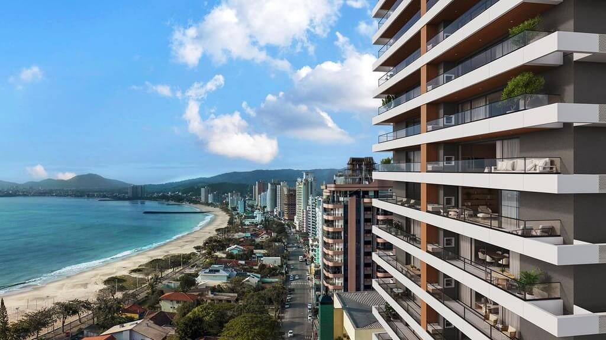

Balneário Piçarras
Os melhores imóveis para se comprar no litoral de Santa Catarina você só encontra aqui.
Somos uma empresa de corretagem de serviço completo, atuando com excelência na cidade de Piçarras, em Santa Catarina. Contamos com uma equipe de especialistas altamente qualificados, dedicada a fornecer suporte completo e personalizado para atender a todas as suas necessidades. Seja qual for a sua dúvida ou desafio, estamos aqui para oferecer orientação e soluções precisas, garantindo a você um atendimento de qualidade e a segurança necessária para tomar as melhores decisões. Nossa missão é ser o seu parceiro confiável em todas as etapas do processo de corretagem.


 
